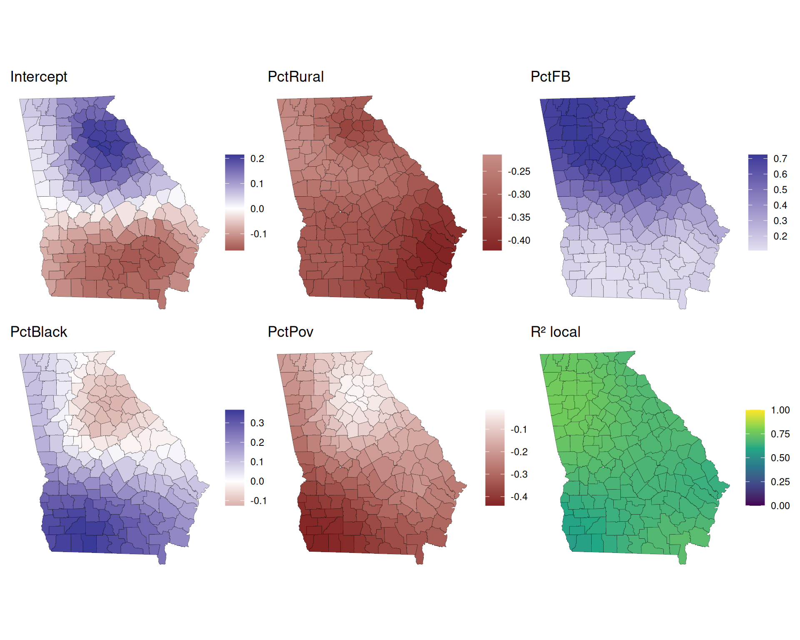
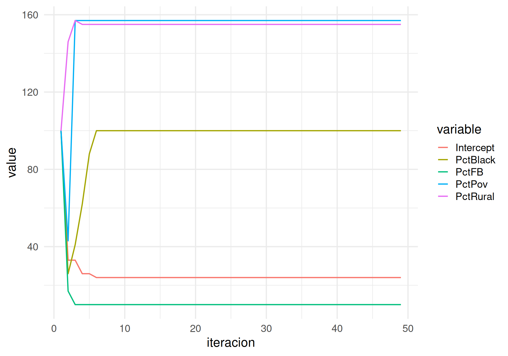
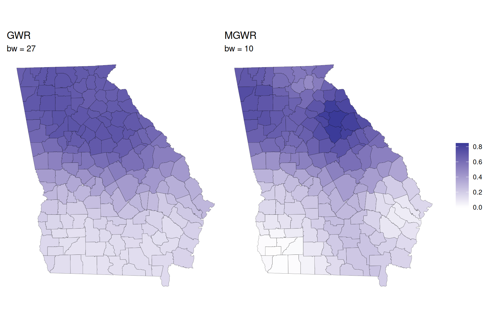
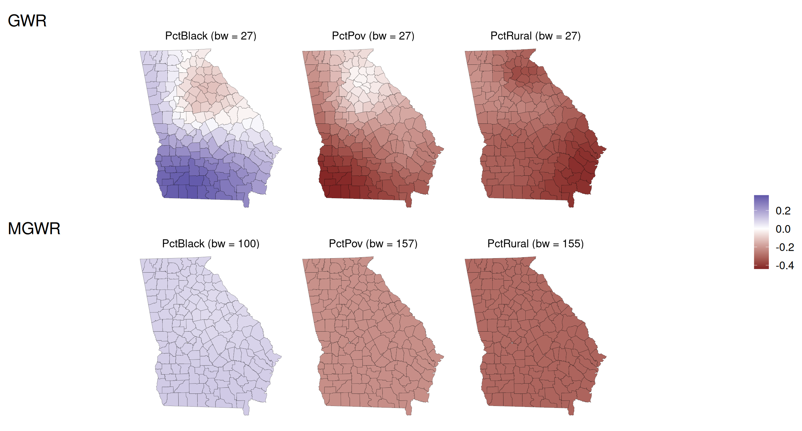
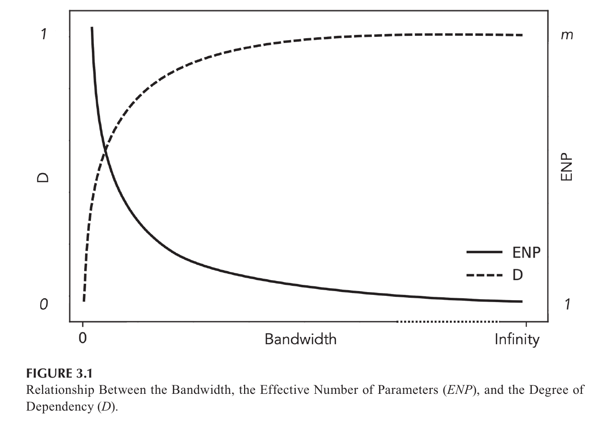
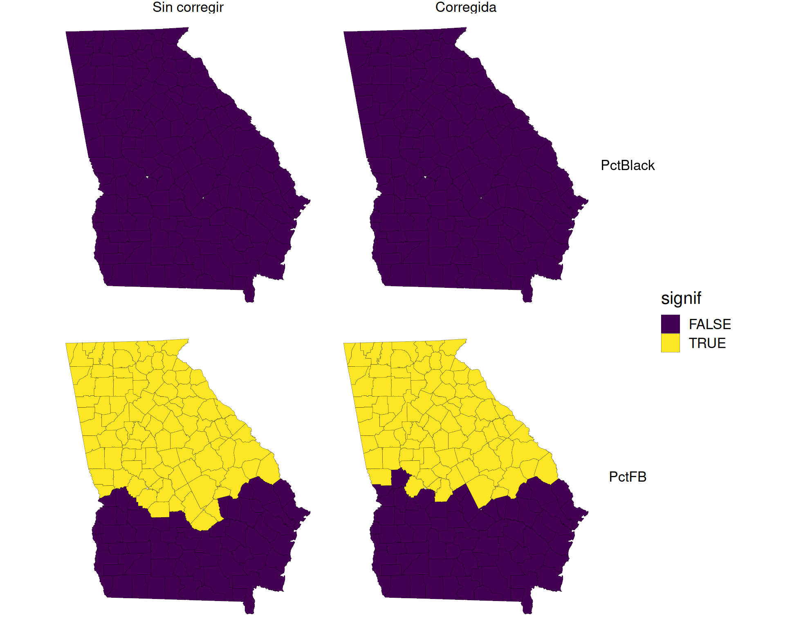
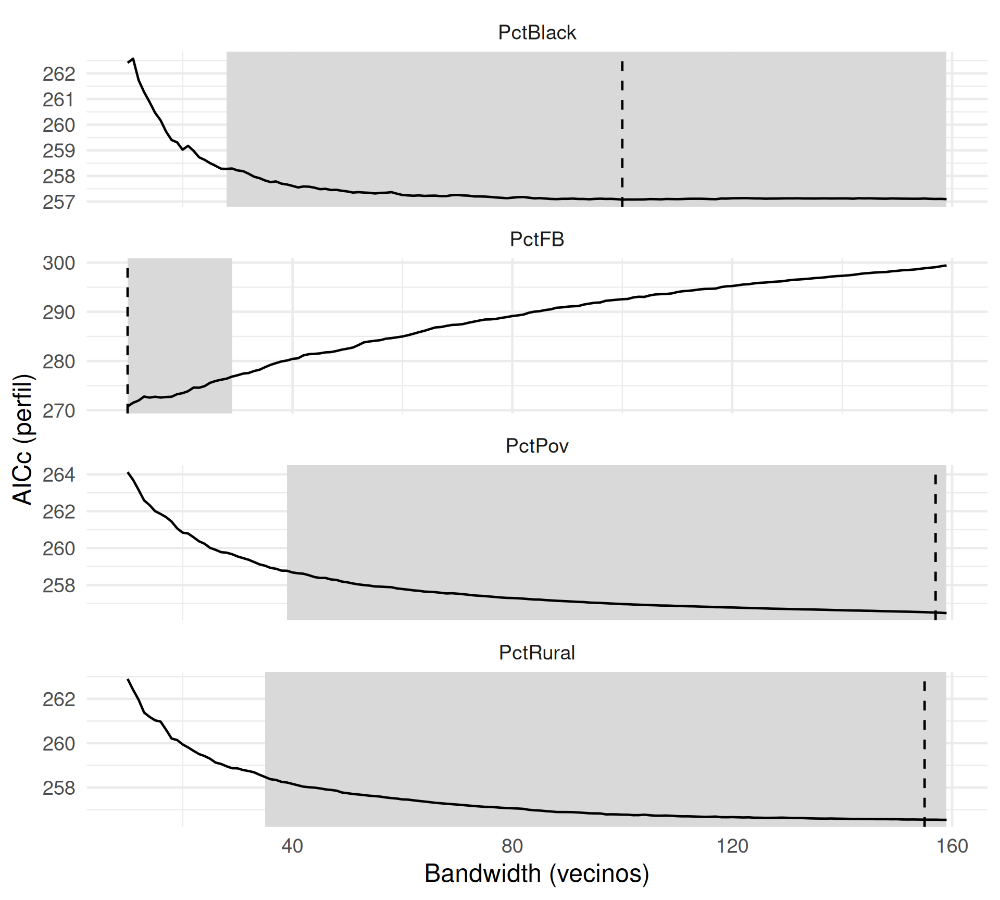
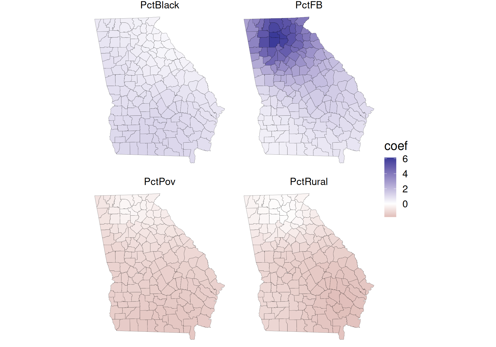

Regresión geográfica ponderada · Día 3
Georgiagwr.multiscale()
Preparando R
Para correr el código de estos slides se necesitan estos paquetes.
¿Cómo instalarlos?
GeorgiaGeorgiadata(Georgia)
data(GeorgiaCounties)
georgia_sf <- st_join(
st_as_sf(Gedu.counties),
st_as_sf(Gedu.df, coords = c("X", "Y"))
)
# Estandarizamos a N(0,1): lo discutimos más adelante
x_vars <- c("PctRural", "PctFB", "PctBlack", "PctPov")
y_var <- c("PctBach")
vars <- c(y_var, x_vars)
georgia_std <- georgia_sf |>
mutate(across(all_of(vars), \(x) as.numeric(scale(x))))
georgia_sf |>
st_drop_geometry() |>
select(AreaKey, all_of(vars)) |>
head() AreaKey PctBach PctRural PctFB PctBlack PctPov
0 13241 11.6 100 1.13 0.35 13.6
1 13281 11.4 100 1.36 0.00 14.0
2 13291 10.1 100 0.88 0.10 18.3
3 13111 7.8 100 0.58 0.03 17.2
4 13213 5.5 89 0.50 0.26 11.3
5 13313 12.0 70 2.55 4.06 11.1159 condados de Georgia (EEUU).
Variable respuesta: PctBach (% de población con título universitario).
Predictores:
PctRural (% población rural)PctFB (% nacidos en el extranjero)PctBlack (% población afroamericana)PctPov (% bajo línea de pobreza)Adaptive bandwidth (number of nearest neighbours): 105 AICc value: 308.1324
Adaptive bandwidth (number of nearest neighbours): 73 AICc value: 301.9621
Adaptive bandwidth (number of nearest neighbours): 51 AICc value: 296.3153
Adaptive bandwidth (number of nearest neighbours): 40 AICc value: 295.2154
Adaptive bandwidth (number of nearest neighbours): 30 AICc value: 294.2373
Adaptive bandwidth (number of nearest neighbours): 27 AICc value: 294.1352
Adaptive bandwidth (number of nearest neighbours): 22 AICc value: 295.0342
Adaptive bandwidth (number of nearest neighbours): 27 AICc value: 294.1352 El bandwidth óptimo es 27
***********************************************************************
* Package GWmodel *
***********************************************************************
Program starts at: 2026-10-09 16:49:56.383162
Call:
gwr.basic(formula = PctBach ~ PctRural + PctFB + PctBlack + PctPov,
data = georgia_std, bw = bw_ga, kernel = "gaussian", adaptive = TRUE)
Dependent (y) variable: PctBach
Independent variables: PctRural PctFB PctBlack PctPov
Number of data points: 159
***********************************************************************
* Results of Global Regression *
***********************************************************************
Call:
lm(formula = formula, data = data)
Residuals:
Min 1Q Median 3Q Max
-1.6526 -0.3580 -0.0662 0.2846 3.2812
Coefficients:
Estimate Std. Error t value Pr(>|t|)
(Intercept) -6.004e-17 5.154e-02 0.000 1.000000
PctRural -3.335e-01 6.340e-02 -5.261 4.74e-07 ***
PctFB 4.006e-01 6.449e-02 6.212 4.66e-09 ***
PctBlack 1.490e-01 8.003e-02 1.862 0.064452 .
PctPov -3.215e-01 8.317e-02 -3.865 0.000163 ***
---Significance stars
Signif. codes: 0 '***' 0.001 '**' 0.01 '*' 0.05 '.' 0.1 ' ' 1
Residual standard error: 0.6498 on 154 degrees of freedom
Multiple R-squared: 0.5884
Adjusted R-squared: 0.5777
F-statistic: 55.04 on 4 and 154 DF, p-value: < 2.2e-16
***Extra Diagnostic information
Residual sum of squares: 65.0316
Sigma(hat): 0.6435946
AIC: 321.0715
AICc: 321.6242
BIC: 210.8984
***********************************************************************
* Results of Geographically Weighted Regression *
***********************************************************************
*********************Model calibration information*********************
Kernel function: gaussian
Adaptive bandwidth: 27 (number of nearest neighbours)
Regression points: the same locations as observations are used.
Distance metric: Euclidean distance metric is used.
****************Summary of GWR coefficient estimates:******************
Min. 1st Qu. Median 3rd Qu. Max.
Intercept -0.166085 -0.100468 0.021691 0.119946 0.2148
PctRural -0.422004 -0.341492 -0.319050 -0.270150 -0.2141
PctFB 0.107993 0.195787 0.475143 0.687251 0.7250
PctBlack -0.125966 -0.022892 0.088694 0.218827 0.3668
PctPov -0.440063 -0.317303 -0.220790 -0.128535 -0.0139
************************Diagnostic information*************************
Number of data points: 159
Effective number of parameters (2trace(S) - trace(S'S)): 21.16425
Effective degrees of freedom (n-2trace(S) + trace(S'S)): 137.8358
AICc (GWR book, Fotheringham, et al. 2002, p. 61, eq 2.33): 294.1352
AIC (GWR book, Fotheringham, et al. 2002,GWR p. 96, eq. 4.22): 272.5065
BIC (GWR book, Fotheringham, et al. 2002,GWR p. 61, eq. 2.34): 176.7024
Residual sum of squares: 46.86271
R-square value: 0.7034006
Adjusted R-square value: 0.6575259
***********************************************************************
Program stops at: 2026-10-09 16:49:56.393025 coeficientes <- c("Intercept", x_vars)
mapas <- map(coeficientes, \(v) {
ggplot(gwr_ga$SDF) +
aes(fill = .data[[v]]) +
geom_sf(linewidth = 0.1) +
scale_fill_gradient2(midpoint = 0) +
labs(title = v, fill = NULL) +
theme_void()
})
mapa_r2 <- ggplot(gwr_ga$SDF) +
aes(fill = Local_R2) +
geom_sf(linewidth = 0.1) +
scale_fill_viridis_c(limits = c(0, 1)) +
labs(title = "R² local", fill = NULL) +
theme_void()
wrap_plots(c(mapas, mapa_r2), ncol = 3)
GWR
\[y_i = \beta_0(s_i) + \sum_{j=1}^{k} \beta_j(s_i) x_{ij} + \varepsilon_i\]
MGWR
\[y_i = \beta_{bw_0}(s_i) + \sum_{j=1}^{k} \beta_{bw_j}(s_i) x_{ij} + \varepsilon_i\]
MGWR se reformula como un modelo aditivo generalizado (GAM), con un término suavizado por variable:
\[\mathbf{y} = \mathbf{f}_{bw_0} + \mathbf{f}_{bw_1}(\mathbf{x}_1) + \dots + \mathbf{f}_{bw_k}(\mathbf{x}_k) + \boldsymbol{\varepsilon}\]
Cada término se estima sobre los residuos parciales:
\[\mathbf{f}_{bw_j} = \mathbf{A}_j \left( \mathbf{y} - \sum_{j' \neq j} \mathbf{f}_{bw_{j'}} \right)\]
\(\mathbf{A}_j\) es la matriz hat de un GWR univariado de \(\mathbf{x}_j\) con su propio \(bw_j\).
Algoritmo
¿Por qué no hay solución cerrada?
En GWR, el \(bw\) se ajusta primero, luego los coeficientes. En MGWR, los bandwidths se estiman junto con los coeficientes: \(bw_j\) se elige sobre el residuo parcial \(\mathbf{y} - \sum_{j' \neq j} \hat{\mathbf{f}}_{j'}\), así que si cambian las demás \(\hat{\mathbf{f}}_{j'}\) (o sus bandwidths) cambia el objetivo y con él el \(bw_j\) óptimo. Se resuelve una variable por vez, iterando hasta que bandwidths y coeficientes dejan de cambiar
| GWR | MGWR | |
|---|---|---|
| Bandwidth | Uno para todas las variables | Uno por variable |
| Supuesto implícito | Todos los procesos comparten escala espacial | Cada proceso tiene su propia escala |
| Estimación | Fórmula cerrada (WLS) | Iterativa (backfitting) |
| Costo computacional | Menor | Mayor |
| Cuándo preferirlo | Exploración inicial, procesos con escala similar esperada | Cuando se sospechan escalas distintas por variable, o para diagnosticar esa sospecha |
gwr.multiscale()bws0: bandwidths iniciales, uno por término (incluido el intercepto). Si se omite, gwr.multiscale() los estima con bw.gwr() por variable antes de iterar.criterion = "dCVR": criterio de convergencia.approach = "AICc": criterio para optimizar cada \(bw_j\) en cada iteración.Las iteraciones del ajuste están en el elemento 5 (sin nombre) de la lista que devuelve gwr.multiscale()

¿Cómo fue el ajuste MGWR en general?
# A tibble: 1 × 8
RSS.gw AICc AIC BIC R2.val R2adj edf enp
<dbl> <dbl> <dbl> <dbl> <dbl> <dbl> <dbl> <dbl>
1 45.4 287. 267. 167. 0.712 0.673 140. 19.1¿Cómo se distribuyen los residuos?
Estandarizar \(y\) y cada \(x_j\) a \(N(0,1)\) antes de calibrar MGWR.
Centrado
GWmodel ya centra por defecto (predictor.centered = TRUE)Escalar
PctFBlims_fb <- range(gwr_ga$SDF$PctFB, mgwr_std$SDF$PctFB)
p_gwr_fb <- ggplot(gwr_ga$SDF) +
aes(fill = PctFB) +
geom_sf(linewidth = 0.1) +
scale_fill_gradient2(midpoint = 0, limits = lims_fb) +
labs(
title = "GWR", fill = NULL,
subtitle = paste("bw =", bw_ga)
) +
theme_void()
p_mgwr_fb <- ggplot(mgwr_std$SDF) +
aes(fill = PctFB) +
geom_sf(linewidth = 0.1) +
scale_fill_gradient2(midpoint = 0, limits = lims_fb) +
labs(
title = "MGWR", fill = NULL,
subtitle = paste(
"bw =", mgwr_std$GW.arguments$bws[3]
)
) +
theme_void()
p_gwr_fb | p_mgwr_fb

Grado de dependencia de los tests de la variable \(j\):
\[D_j = \dfrac{m - ENP_j}{m - 1}\]

Advertencia
GWmodel reporta solo el ENP global del modelo, no el \(ENP_j\) de cada variable.
Bonferroni modificado (FWER)
\[\alpha_j^* = \dfrac{\alpha}{m + D_j(1 - m)} = \dfrac{\alpha}{ENP_j}\]
Šidák y Benjamini-Hochberg se modifican igual: el número de tests \(m\) se reemplaza por una función de \(D_j\).
\(ENP_j\) aproximado: GWR univariado sin intercepto, con el \(bw_j\) de MGWR.
alpha <- 0.05
m <- nrow(georgia_std)
tests <- tibble(
variable = x_vars,
bw = mgwr_std$GW.arguments$bws[-1]
) |>
mutate(
enp_j = map2_dbl(variable, bw, \(v, b) {
gwr.basic(
reformulate(c(v, "-1"), response = "PctBach"),
data = georgia_std, bw = b,
kernel = "gaussian", adaptive = TRUE
) |> pluck("GW.diagnostic", "enp")
}),
d_j = (m - enp_j) / (m - 1),
alpha_j = alpha / enp_j
)
tests# A tibble: 4 × 5
variable bw enp_j d_j alpha_j
<chr> <dbl> <dbl> <dbl> <dbl>
1 PctRural 155 1.35 0.998 0.0372
2 PctFB 10 10.7 0.939 0.00467
3 PctBlack 100 1.78 0.995 0.0280
4 PctPov 157 1.31 0.998 0.0383 edf <- mgwr_std$GW.diagnostic$edf
signif_long <- mgwr_std$SDF |>
select(PctFB_TV, PctBlack_TV) |>
pivot_longer(-geometry, names_to = "variable",
values_to = "t", names_pattern = "(.*)_TV") |>
left_join(tests, by = "variable") |>
mutate(
`Sin corregir` = abs(t) > qt(1 - alpha / 2, edf),
Corregida = abs(t) > qt(1 - alpha_j / 2, edf)
) |>
pivot_longer(c(`Sin corregir`, Corregida),
names_to = "test", values_to = "signif")
p_signif <- ggplot(signif_long) +
aes(fill = signif) +
geom_sf(linewidth = 0.1) +
scale_fill_manual(values = c("#440154", "#FDE725")) +
facet_grid(variable ~ fct_rev(test)) +
theme_void(base_size = 16)
p_signif
¿La variación de los coeficientes locales es real o es ruido de muestreo?
En GWR (Día 2) lo respondimos con el test de permutación Monte Carlo (gwr.montecarlo()).
Test Monte Carlo para MGWR
No disponible en GWmodel
gwr.montecarlo() solo acepta un bandwidth único: no hay equivalente para gwr.multiscale(). Con \(N = 1000\) son 1000 backfittings completos, cada uno con su búsqueda de bandwidths.
Un bandwidth por variable, cada uno con su propia incertidumbre
¿Es igual de “chata” la curva AICc alrededor del óptimo para una variable local (PctFB) que para una casi global (PctRural)?
Es la misma búsqueda que hace el backfitting en la última iteración (paso 2):
Cada curva es un perfil: AICc al mover \(bw_j\), con el resto del modelo en su óptimo.
# Residuo parcial de cada X_k: f_k + e = y - suma de las demás f_p
parciales <- georgia_std |>
mutate(across(
all_of(x_vars),
\(x) mgwr_std$SDF[[cur_column()]] * x + mgwr_std$SDF$residual,
.names = "parcial_{.col}"
))
# Perfil de AICc: GWR univariado sin intercepto, un bw por vez
perfil_bw <- expand_grid(
variable = x_vars, bw = 10:nrow(georgia_std)
) |>
mutate(
AICc = map2_dbl(variable, bw, \(v, b) {
fm <- as.formula(str_glue("parcial_{v} ~ {v} -1"))
gwr.basic(
fm, data = parciales, bw = b,
kernel = "gaussian", adaptive = TRUE
) |>
pluck("GW.diagnostic", "AICc")
}, .progress = TRUE)
)# A tibble: 4 × 3
variable lo hi
<chr> <int> <int>
1 PctBlack 28 159
2 PctFB 10 29
3 PctPov 39 159
4 PctRural 35 159¿Cómo se lee?
IC que llega a \(m\), el proceso no se distingue de uno global.
IC que no se solapan: procesos a escalas distintas
Gráfico de perfiles
ggplot(perfil_bw) +
geom_rect(
data = ic_bw, fill = "grey85",
aes(xmin = lo, xmax = hi, ymin = -Inf, ymax = Inf)
) +
geom_line(aes(x = bw, y = AICc)) +
geom_vline(
data = select(tests, variable, bw),
aes(xintercept = bw), linetype = "dashed"
) +
facet_wrap(~variable, scales = "free_y", ncol = 1) +
labs(x = "Bandwidth (vecinos)", y = "AICc (perfil)")
Importante
Con pocos vecinos por ventana, dos predictores pueden aparecer correlacionados localmente aunque no lo estén globalmente (Wheeler & Tiefelsdorf 2005).
gwr.collin.diagno() calcula diagnósticos locales de colinealidad para un GWR de bandwidth único:
VIF local (variance inflation factor)local_CN (condition number)VDP (variance-decomposition proportions) PctRural_VIF PctFB_VIF PctBlack_VIF PctPov_VIF
Min. :1.132 Min. :1.179 Min. :1.408 Min. :1.585
1st Qu.:1.263 1st Qu.:1.352 1st Qu.:1.673 1st Qu.:1.823
Median :1.610 Median :1.788 Median :2.148 Median :2.249
Mean :1.674 Mean :1.740 Mean :2.115 Mean :2.305
3rd Qu.:2.059 3rd Qu.:2.049 3rd Qu.:2.467 3rd Qu.:2.682
Max. :2.517 Max. :2.485 Max. :2.964 Max. :3.481 ¿Y en MGWR?
Bandwidths propios matizan el problema (una variable casi global no pierde tamaño de muestra), pero no lo resuelven. GWmodel no tiene esta función para MGWR.
GWGLM (Geographically Weighted Generalized Linear Model) extiende GWR a la familia de modelos lineales generalizados (logística, Poisson, …), reemplazando mínimos cuadrados ponderados por máxima verosimilitud ponderada localmente (IRLS). La mecánica conceptual (ponderar por cercanía) es la misma que en GWR.
Mixed GWR: combina coeficientes globales (constantes) con locales (variables en el espacio), para variables donde no se espera variación espacial. gwr.mixed() en GWmodel.
GW-PCA: análisis de componentes principales con estructura de correlación estimada localmente. gwpca() en GWmodel.
RF espacial: Random Forest con pesos o coordenadas espaciales incorporados (e.g. paquetes SpatialML, grf), para capturar no estacionariedad sin asumir una forma funcional lineal.
TWR/GTWR: extienden la ponderación local de GWR al eje temporal (o a ambos ejes), para datos con estructura espacio-temporal.
# Solo para mostrar, usando variable dicotómica.
georgia_std <- georgia_std |>
mutate(HighBach = as.numeric(PctBach > median(PctBach)))
# Bandwidth
dMat <- gw.dist(dp.locat = st_coordinates(st_centroid(georgia_std)))
bw_bin <- bw.ggwr(
HighBach ~ PctRural + PctFB + PctBlack + PctPov,
data = georgia_std, family = "binomial",
approach = "AICc", kernel = "gaussian",
adaptive = TRUE, dMat = dMat
)
# Ajuste
ggwr_ga <- ggwr.basic(
HighBach ~ PctRural + PctFB + PctBlack + PctPov,
data = georgia_std, bw = bw_bin, family = "binomial",
kernel = "gaussian", adaptive = TRUE, dMat = dMat
)
Día 1
lasrosas.corn)Día 2
Día 3